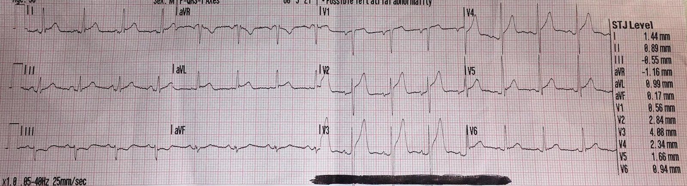
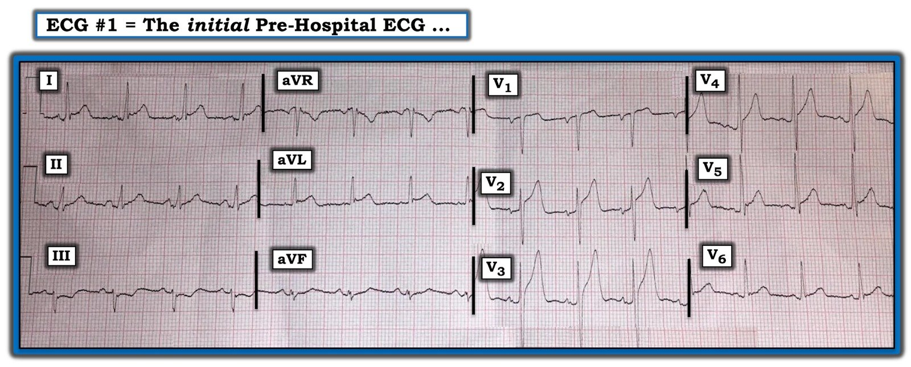

15/09/2020 — Một người 58 tuổi gục ngã dưới nắng nóng
Bản dịch tiếng Việt của bài "A 58 year old collapses in the hot sun" – Dr. Smith’s ECG Blog. Giữ nguyên toàn bộ 4 hình ảnh của bản gốc.
Một nam giới 58 tuổi
làm việc ngoài trời dưới nắng nóng trong 2-3 giờ. Ông kể rằng mình suýt ngất,
và những người xung quanh đã gọi 911. Họ cho ông uống nước pha muối, vì ông nghĩ mình bị
mất nước.
Khi nhân viên cấp cứu ngoài viện đến, ông tỉnh táo, vã mồ hôi và cảm thấy yếu. Ông tự đi bộ lên xe cứu thương
để được đánh giá. Ông phủ nhận đau đầu, đau ngực, buồn nôn / nôn và khó thở.
Ông không có tiền sử bệnh tim, không dùng thuốc, cũng không có yếu tố
nguy cơ nào. Các dấu hiệu sinh tồn được ghi nhận, và ông được gắn monitor theo dõi tim, bao gồm cả điện tâm đồ 12
chuyển đạo trước viện này:


Máy tính đo giúp bạn mức ST chênh lên tại điểm J.
Ở đây là 4,08 mm ở V2, và 2,84 ở V3, cũng như 2,34 mm ở V4.
Hình ảnh này đáng lo ngại cho nhồi máu cơ tim thành trước, và với ST chênh lên ở aVL cùng ST chênh xuống soi gương ở các chuyển đạo thành dưới, trông giống tắc LAD đoạn gần.
Hay đây là ST chênh lên biến thể bình thường (thường được gọi là tái cực sớm)?
Vấn đề này đã được tôi và Dr. Emre Aslanger (một bác sĩ can thiệp) nghiên cứu kỹ lưỡng trong một loạt bài báo:
Đây là công thức 3 biến để phân biệt ST chênh lên biến thể bình thường với tắc LAD.
Công thức 3 biến đã được thay thế bởi công thức 4 biến
Tính công thức 4 biến tại MDcalc, hoặc tải ứng dụng iPhone (“SubtleSTEMI“), hoặc ứng dụng Android (“ECG Smith“)
Công thức 4 biến này đã được Emre Aslanger thẩm định ngoài.
Sau đó, Dr. Aslanger đưa ra một công thức đơn giản hơn không cần hiệu chỉnh QT.
Trong các nghiên cứu phân biệt tắc LAD kín đáo với ST chênh lên biến thể bình thường này, chúng tôi đã loại trừ những bệnh nhân có điện tâm đồ tắc LAD “rõ ràng”.
Bao gồm:
Không có dạng lõm hướng lên (upward concavity) ở V2-V6, mặc dù điều này gặp ở 40-50% trường hợp tắc LAD
ST chênh lên tại điểm J từ 5 mm trở lên
ST chênh xuống ở thành dưới hoặc ở chuyển đạo trước tim
Biến dạng phần cuối QRS (Terminal QRS distortion) (không có sóng S và sóng J) ở V2 hoặc V3.
Sóng Q ở bất kỳ chuyển đạo nào trong V2-V4
Trên điện tâm đồ này:
Không có ST chênh lên 5 mm tại điểm J
Có dạng lõm hướng lên ở V2-V6
Không có biến dạng phần cuối QRS.
Không có sóng Q.
Không có ST chênh xuống ở các chuyển đạo trước tim.
Vì có ST chênh xuống ở các chuyển đạo thành dưới, sẽ rất nguy hiểm nếu dùng các công thức để phân biệt biến thể bình thường với tắc LAD.
Bệnh nhân này lẽ ra đã bị loại khỏi nghiên cứu vì đây là một trường hợp tắc LAD “không kín đáo” (hay rõ ràng).
Dù vậy, hãy cứ tính thử để xem giá trị là bao nhiêu:
Các biến của công thức 4 biến:
Biên độ sóng R ở V4 (RAV4) = 13 mm
Tổng biên độ QRS ở V2 = 15 mm
QTc = 374
ST chênh lên tại thời điểm 60 ms sau điểm J (STE60V3) = 6 mm
Giá trị công thức = 20,07, cao hơn đáng kể so với điểm cắt chính xác nhất là 18,2, và gợi ý mạnh tắc LAD.
Lưu ý về điểm cắt: Trên điểm cắt 18,2, công thức có độ nhạy 89% và độ đặc hiệu 95% trong nghiên cứu xây dựng (và độ nhạy 83%, độ đặc hiệu 88% trong nghiên cứu thẩm định ngoài). Trong nghiên cứu xây dựng, độ đặc hiệu chỉ vượt trên 97% ở giá trị 19,0).
Như với mọi quy tắc phân đôi, giá trị càng gần điểm cắt thì càng kém chính xác. Nếu độ đặc hiệu chung là 88% với giá trị trên 18,2, thì độ đặc hiệu đó sẽ thấp hơn với những giá trị sát 18,2 và cao hơn với những giá trị vượt xa 18,2.
Đây là công thức đơn giản hóa (QT = 320, tức 8 mm):
(Biên độ sóng R ở chuyển đạo V4 + biên độ QRS ở V2) trừ đi
(khoảng QT tính bằng milimét (không phải mili giây!) + STE60 ở V3).
QT = 320 ms = 8 mm
Tính: (13 + 15) – (8 + 6) = 28 – 14 = 14.
Điểm cắt chính xác nhất là 12, với giá trị trên 12 gợi ý ST chênh lên lành tính, và giá trị dưới 12 gợi ý tắc LAD.
Ca bệnh tiếp diễn
Tại khoa cấp cứu, một bác sĩ tim mạch đã xem xét và
kích hoạt phòng thông tim (cath lab) để thông tim thăm dò.
Kết quả thông tim âm tính. Troponin âm tính và tiếp tục âm tính. Bệnh nhân tự ý xuất viện trái lời khuyên y khoa (AMA) sau khi thông tim.
Như vậy, trong ca này công thức đơn giản hóa đã thắng công thức phức tạp hơn. Thực tế, trong bộ dữ liệu của Dr. Aslanger, công thức này tốt hơn một chút (dù không có ý nghĩa thống kê.
Chụp mạch vành:
Ưu thế: Phải
LM: Một mạch 5 mm chia đôi
thành LAD và động mạch vành
LCx. Thân chung động mạch vành trái không có tổn thương
LAD: LAD típ 3, cho ra
các nhánh xuyên vách và nhánh chéo như thường lệ. LAD và các nhánh
chính của nó không có tổn thương
LCX: Một mạch không ưu thế,
khẩu kính trung bình, cho ra một số nhánh bờ tù (OM) và tiếp tục
hết đường đi trong rãnh nhĩ thất dưới dạng một mạch nhỏ. LCx
và các nhánh chính của nó không có tổn thương
RCA: Một mạch ưu thế cho ra
động mạch liên thất sau (PDA) và nhánh sau bên (PLA). RCA và các nhánh chính của nó không có tổn thương
Những điểm cần học
1. Chú ý đến tiêu chuẩn đưa vào của công thức.
A. Tiêu chuẩn đưa vào: ST chênh lên ít nhất 1 mm tại điểm J ở ít nhất 1 trong các chuyển đạo V2-V4 (đo so với điểm nối PQ (khởi đầu QRS)
2. Chú ý đến tiêu chuẩn loại trừ của công thức. Đây là những đặc điểm rất hiếm gặp trong ST chênh lên lành tính:
B. Tiêu chuẩn loại trừ: QRS rộng (như LBBB hoặc RBBB), ST chênh lên ít nhất 5 mm chỉ cần ở một chuyển đạo, đoạn ST dạng lồi ở bất kỳ chuyển đạo nào trong V2-V6, sóng Q ở bất kỳ chuyển đạo nào trong V2-V4, ST chênh xuống ở thành dưới hoặc ở chuyển đạo trước tim, biến dạng phần cuối QRS ở V2 hoặc V3.
3. Khi bệnh nhân không có xác suất tiền nghiệm cao, một điện tâm đồ “dương tính” có giá trị tiên đoán dương thấp hơn nhiều (bệnh nhân này không đau ngực, không khó thở, không có yếu tố nguy cơ, và có lời giải thích hợp lý cho các triệu chứng của mình). Đó là lý do phác đồ trước viện của chúng tôi là: 1) máy tính chẩn đoán ***STEMI*** VÀ bệnh nhân có đau ngực.
4. Độ đặc hiệu của công thức không hoàn hảo. Độ đặc hiệu của công thức đơn giản hóa là 92%. Độ đặc hiệu của công thức 4 biến là 95%, và trên 97% nếu giá trị lớn hơn 19 (ở đây là 20,07). Độ đặc hiệu của công thức 4 biến trong nghiên cứu thẩm định tại điểm cắt 18,2 là 87%, và sẽ cao hơn với giá trị 20,07.
5. Tôi không dùng một giá trị công thức âm tính để gạt bỏ một điện tâm đồ mà tôi đang lo ngại. Tôi dùng nó để phát hiện một trường hợp tắc LAD mà nếu không có nó tôi đã bỏ sót.
6. Khi giá trị cao mà bạn không tin đó là tắc LAD, tôi khuyên nên đánh giá thật tích cực bằng các điện tâm đồ liên tiếp, troponin, và (tốt nhất là) siêu âm tim cản âm chất lượng cao.
7. Ngay cả bệnh nhân 58 tuổi cũng có thể có ST chênh lên biến thể bình thường rõ rệt.

===================================
BÌNH LUẬN CỦA TÔI, bởi KEN GRAUER, MD (15/9/2020):
===================================
Tôi thích ca này — vì nó làm nổi bật rằng dù các công thức của Dr. Smith hữu ích đến đâu — chúng không hoàn hảo. Như Dr. Smith nhấn mạnh ở Điểm cần học thứ 3 — “Tôi không dùng một giá trị công thức âm tính để gạt bỏ một điện tâm đồ mà tôi đang lo ngại.”
- Tôi giới hạn bình luận của mình ở chỗ TẠI SAO “câu trả lời đúng” trong ca hôm nay là kích hoạt phòng thông tim — dù kết quả thông tim hóa ra bình thường. Để thuận tiện cho việc bàn luận — tôi đã đặt lại điện tâm đồ ban đầu ghi tại hiện trường ở Hình 1.


Bệnh nhân trong ca hôm nay là một nam giới 58 tuổi, trước đó khỏe mạnh, bị gắng sức quá mức sau khi làm việc ngoài trời dưới nắng nóng trong vài giờ. Ông bị mất nước và “suýt ngất” — nhưng không than phiền đau ngực.
SUY NGHĨ CỦA TÔI về BỆNH SỬ: Bệnh sử “đau ngực” không được ghi nhận ở tất cả bệnh nhân được phát hiện nhồi máu cơ tim. Dù vậy, như Dr. Smith đã nói — xác suất tiền nghiệm của nhồi máu cơ tim cấp trong ca hôm nay (tức là, khả năng nhồi máu cơ tim cấp chỉ dựa vào bệnh sử trước khi bạn thậm chí nhìn vào điện tâm đồ!) — là tương đối thấp. Đó là vì bệnh nhân này trước đó khỏe mạnh — ông không đau ngực — và có lời giải thích hợp lý cho các triệu chứng của ông.
- Dù vậy — bệnh nhân này đã ở một độ tuổi nhất định (tức là, 58 tuổi) — ông đã suýt ngất, và ông đã vừa yếu vừa vã mồ hôi sau sự việc. Vì vậy — dù xác suất tiền nghiệm của nhồi máu cơ tim cấp rõ ràng thấp hơn nhiều so với khi bệnh sử là đau ngực mới khởi phát — rõ ràng vẫn có khả năng nhồi máu cơ tim đi kèm các triệu chứng tương đương không phải đau ngực.
- ĐIỂM THEN CHỐT (PEARL) #1: Như Dr. Smith đã nói — việc “tỷ lệ hiện mắc” của bệnh (tức là, tần suất nhồi máu cơ tim cấp ở những bệnh nhân có kiểu biểu hiện này) thấp hơn — khiến các bất thường điện tâm đồ sẽ kém đặc hiệu hơn cho OMI cấp. Điều này được gọi là định lý Bayes. Cách chúng ta diễn giải các dấu hiệu trên điện tâm đồ #1 vẫn giữ nguyên — NHƯNG, tỷ lệ hiện mắc bệnh tương đối thấp đơn giản có nghĩa là các dấu hiệu điện tâm đồ bất thường có thể kém chính xác hơn trong dự đoán OMI cấp, so với khi các dấu hiệu điện tâm đồ y hệt được thấy ở một bệnh nhân có bệnh sử đáng lo ngại hơn nhiều là đau ngực mới khởi phát, mang tính chất do tim.
ĐIỂM THEN CHỐT (PEARL) #2: Không phải mọi bệnh nhân nhồi máu cơ tim cấp đều có đau ngực. Các nghiên cứu Framingham từ nhiều năm trước đã cho chúng ta biết rằng tần suất “nhồi máu cơ tim thầm lặng” cao tới ~30% của tất cả các ca nhồi máu cơ tim.
- Phần thú vị của dữ liệu này là ở khoảng một nửa số 30% đó (tức là, ~15% tổng số bệnh nhân nhồi máu cơ tim) — những bệnh nhân được phát hiện có bằng chứng rõ ràng của nhồi máu trên điện tâm đồ theo dõi hằng năm hoàn toàn KHÔNG có triệu chứng — do đó là những ca nhồi máu cơ tim thực sự “thầm lặng”.
- Ở nửa còn lại của 30% đó (tức là, ở ~15% tổng số bệnh nhân nhồi máu cơ tim) — những bệnh nhân được phát hiện trên điện tâm đồ theo dõi là đã bị nhồi máu không đau ngực — nhưng họ đã có “một điều gì đó khác” được cho là liên quan đến nhồi máu cơ tim của họ.
- Triệu chứng “điều gì đó khác” thường gặp nhất là khó thở. Các triệu chứng tương đương không phải đau ngực khác bao gồm — đau bụng — các triệu chứng “giống cúm” (tức là, đau cơ; “cảm thấy” không khỏe) — mệt mỏi quá mức — thay đổi trạng thái tâm thần (tức là, như có thể gặp ở một bệnh nhân cao tuổi đi lang thang khỏi nhà).
- ĐIỀU CỐT LÕI: Hãy lưu ý đến thực thể “nhồi máu cơ tim thầm lặng” — hoặc hoàn toàn “thầm lặng” — hoặc đi kèm một triệu chứng tương đương không phải đau ngực. Tần suất của cả hai loại nhồi máu cơ tim thầm lặng đều phổ biến hơn so với mức đôi khi người ta nhận thức được.
SUY NGHĨ CỦA TÔI về điện tâm đồ #1: Nhịp trên điện tâm đồ #1 là nhịp xoang tần số 85-90/phút. Tất cả các khoảng và trục đều bình thường. Không thấy tiêu chuẩn lớn các buồng tim (dù sóng S bị cắt cụt ở chuyển đạo V3). Về Thay đổi Q–R–S–T:
- Không có sóng Q.
- Tăng tiến sóng R bình thường — với vùng chuyển tiếp (nơi độ sâu sóng S vượt quá chiều cao sóng R) xảy ra bình thường giữa chuyển đạo V3 và V4.
- Như Dr. Smith đã nêu — có ST chênh lên đáng kể (đặc biệt ở chuyển đạo V2 và V3, đạt 4 mm ở V3). Tổng cộng — ST chênh lên được ghi nhận ở không dưới 8 chuyển đạo (tức là, chuyển đạo I,aVL; và V1-đến-V6).
- Có ST-sóng T chênh xuống ở chuyển đạo III — và gợi ý điều này cũng có ở chuyển đạo aVF.
NHẬN ĐỊNH (Tổng hợp lại tất cả): Nam giới 58 tuổi này có triệu chứng mới — dù việc không đau ngực và hoàn cảnh có thể giải thích được xung quanh các triệu chứng khi đến viện gợi ý khả năng mắc bệnh tiền nghiệm thấp hơn.
- Không có bản ghi cũ để so sánh.
- Mức độ ST chênh lên thấy ở chuyển đạo V2 và V3 nhiều hơn mức thường thấy ở các biến thể tái cực. Kèm theo đó là ST chênh lên rõ ràng ở chuyển đạo aVL — vốn thường gặp trong tắc LAD đoạn gần cấp.
- Hình dạng của ST-T chênh xuống ở chuyển đạo III là hình soi gương ngược lại với hình dạng của ST-T chênh lên ở chuyển đạo aVL. Mối lo ngại rằng đây là một dấu hiệu “thật” càng tăng do có ST thẳng đuỗn kín đáo-nhưng-có-thật, kèm gợi ý ST chênh xuống ở chuyển đạo aVF.
ĐIỀU CỐT LÕI: NẾU chúng ta phải đánh giá ca này chỉ dựa trên bệnh sử và điện tâm đồ #1 — thì thông tim rõ ràng có chỉ định. Đơn giản là không có cách nào loại trừ OMI cấp đang diễn ra do tắc LAD đoạn gần chỉ từ một điện tâm đồ duy nhất này.
- Đôi khi kết quả thông tim sẽ bình thường, như trong ca hôm nay. Đó chính là lý do người ta thông tim! Nếu mọi lần kích hoạt phòng thông tim mà chúng ta yêu cầu đều dương tính — thì chúng ta đang không kích hoạt phòng thông tim đủ nhiều. Tất nhiên, mục tiêu của chúng ta là hạn chế hết mức có thể số ca thông tim âm tính mà chúng ta chỉ định — nhưng điều quan trọng là phải nhận ra rằng kết quả thông tim âm tính trong ca hôm nay đã cung cấp thông tin chẩn đoán quan trọng.
- Như chúng tôi đã bàn luận nhiều lần trên Dr. Smith’s ECG Blog — trong số các công cụ bổ sung sẵn có tại khoa cấp cứu để phân loại những bệnh nhân có bản ghi như bản ghi chúng ta thấy ở điện tâm đồ #1 cần thông tim kịp thời, bao gồm: — các giá trị troponin độ nhạy cao liên tiếp — các điện tâm đồ liên tiếp — tìm điện tâm đồ cũ để so sánh — siêu âm tim tại giường ở khoa cấp cứu trong lúc đau ngực. Để biết công cụ nào cần cho bệnh nhân nào trước khi quyết định có cần thông tim kịp thời hay không — “Phải có mặt ở đó mới biết…”.
Một số SUY NGHĨ Cuối cùng về Ca hôm nay: Có một số bài học quan trọng cần rút ra từ ca hôm nay. Tôi sẽ bổ sung những điều sau vào các Điểm cần học mà Dr. Smith đã nêu ở trên.
- Để trả lời câu hỏi tu từ của Dr. Smith = “Liệu có giới hạn tuổi trên nào mà từ đó chúng ta không nên nghi ngờ biến thể tái cực nữa không?” — Kinh nghiệm ngoại trú của tôi khi đọc toàn bộ điện tâm đồ của 35 nhân viên y tế trong suốt 30 năm đã cho tôi thấy rằng đôi khi có thể gặp biến thể tái cực ở những bệnh nhân trong độ tuổi của người đàn ông 58 tuổi trong ca hôm nay. Và, biến thể tái cực có thể gặp ở cả nam lẫn nữ thuộc mọi chủng tộc.
- Tôi đã nêu rằng không có bằng chứng lớn các buồng tim trên điện tâm đồ #1. Nhưng có một số tiêu chuẩn điện thế cho LVH sử dụng độ sâu sóng S ở chuyển đạo V3 — và sóng S ở chuyển đạo V3 đã bị cắt cụt! (Xem Bình luận của tôi ở cuối bài ngày 20 tháng Sáu năm 2020 trên Blog của Dr. Smith). Kết quả là — chúng ta KHÔNG biết liệu có đủ điện thế cho LVH hay không. Và NẾU sóng S ở chuyển đạo V3 sâu hơn đáng kể so với những gì ta thấy trên điện tâm đồ #1 — thì mức ST chênh lên mà ta thấy ở chuyển đạo V2 và V3 có thể không tăng một cách bất tương xứng.
- Một số đặc điểm trên điện tâm đồ #1 phù hợp với một biến thể tái cực. Bao gồm: i) Đoạn ST chênh lên có dạng dốc lên (tức là, cấu hình “mặt cười”); ii) Cùng hình dạng ST chênh lên này xuất hiện ở rất nhiều chuyển đạo (8 trên 12), với khía điểm J đặc trưng của biến thể tái cực ở 4 chuyển đạo (tức là, chuyển đạo I, aVL, V5 và V6); và, iii) Không có ST-T chênh xuống soi gương ở 1 chuyển đạo thành dưới có phức bộ QRS dương ưu thế ( = chuyển đạo II).
- Dù vậy — Ngay cả khi chúng ta quy toàn bộ ST chênh lên thấy trên điện tâm đồ #1 cho một “biến thể tái cực” — người ta thường không thấy ST-T chênh xuống soi gương ngược lại ở chuyển đạo III (so với chuyển đạo aVL) như chúng ta thấy ở đây. Và dù đúng là cả hai chuyển đạo III và aVF đôi khi có thể bình thường biểu hiện sóng T đảo ngược khi QRS ở các chuyển đạo này âm ưu thế — chúng ta vẫn thường không thấy ST chênh xuống (như ở chuyển đạo III ở đây) hay ST thẳng đuỗn (như ở aVF). VÌ VẬY — tôi thực sự rất muốn thấy một điện tâm đồ theo dõi ở bệnh nhân này sau khi nghỉ ngơi, bù điện giải và bù nước, để xem liệu điều đó có làm hết các thay đổi ST-T ở chuyển đạo III và aVF hay không.
- Ít ra thì các nhân viên y tế đã biết kết quả thông tim âm tính trước khi bệnh nhân này ký giấy tự ý xuất viện trái lời khuyên y khoa (AMA). Nếu bệnh nhân lẻn đi trước khi được thông tim — thì nhân viên khoa cấp cứu sẽ có trách nhiệm bảo đảm bệnh nhân nhận thức đầy đủ về những hậu quả có thể xảy ra khi bỏ về.
- Cuối cùng — Nếu bệnh nhân không tự ý xuất viện, và nếu điện tâm đồ ghi lại sau khi nghỉ ngơi và bù nước cho thấy các dấu hiệu y hệt như trên điện tâm đồ #1 — tôi sẽ làm một bản sao thu nhỏ điện tâm đồ của ông để ông mang theo trong ví, đưa cho nhân viên y tế xem nếu sau này ông lại đến khoa cấp cứu với triệu chứng mới.